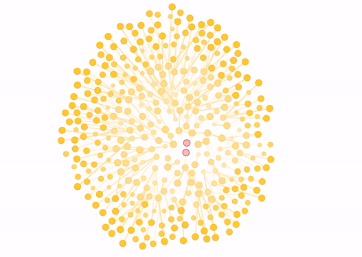

最新数据
美国约翰霍普金斯大学统计结果*
*数据来自各国政府，武汉很多人死在家中，都没有录入数据
英国，香港著名高校实验室根据此次病毒传播特征，建立估算模型
我们正在找这个数据，尽快呈现链接，也欢迎大家提供给我。

news
2020年2月06号， 吹哨者李文亮医生去世，微博出现大量网名冲塔#我要言论自由#，2月7号微博下跪删帖。
感谢youtuber记录人民觉醒的光荣时刻。
#我要言论自由*
#我要言论自由*
高关注度youtuber
我也是最近刚开始看youtube，里面很多有良知的自媒体，下面是一部分比较好的，我会持续添加，也欢迎大家推荐
新唐人電視臺
美国之音中文网
自由亚洲电台
大纪元
中华公众党-华涌
李永乐老师
[中华电视公司]>>>(https://www.youtube.com/user/TBSCTS)
[公民记者陈秋实] >>>(https://www.youtube.com/channel/UCv361SF6FKznoGPKEFG9Yhw)
[江峰时刻] >>>(https://www.youtube.com/channel/UCa6ERCDt3GzkvLye32ar89w)
[李一平] >>>(https://www.youtube.com/channel/UCLXvE-XNRIs7_GzEsEmMiRw)
[郭文贵] >>>(https://www.youtube.com/channel/UCO3pO3ykAUybrjv3RBbXEHw)
[ Citizen Laohei公民老黑 ]（https://www.youtube.com/channel/UCtLgwBOza-dnuaBg6W6YXog）
## 为了让和我一样在墙里的同事可以看到更多的信息源头，志愿付出时间经历维护网站，感谢Wuhan2020社区，感谢GitHub支持